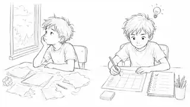
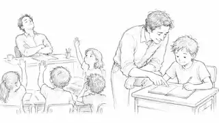
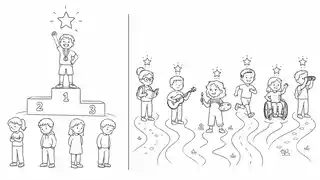
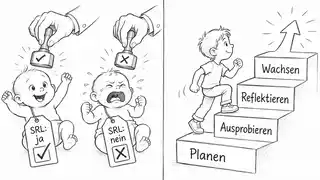
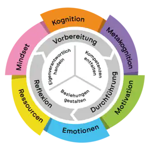

Ferdinand Stebner
Universität Osnabrück
- Lern- und Selbstregulationsstrategien
- Diagnostik und gezielte Förderung
- Implementierung in Unterricht und Schule
Kein fertiges Schulmodell. Ein Versuch, Forschung, Unterrichtserfahrung und laufende Schulentwicklung miteinander zu verbinden.




Ich kann eine Aufgabe zunehmend ohne unmittelbare Hilfe bearbeiten.
Ich organisiere Zeit, Material, Reihenfolge und Arbeitsablauf.
Ich übernehme Verantwortung für Entscheidungen und Ergebnisse.
Ich plane, beobachte, passe an und reflektiere meinen eigenen Lernprozess.

Die Turbine hilft, SRL nicht auf „Organisation“ zu verkürzen. Mehrere Ebenen greifen gleichzeitig ineinander und halten den Lernprozess in Bewegung.
ist das Bildungsziel.
sind Kompetenzen, die gelernt und geübt werden.
geben äußere Struktur und machen Prozesse sichtbar.
schafft Gelegenheiten, diese Regulation immer wieder zu üben.
Ziel klären · Energie einschätzen · Ablenker erkennen · ersten Schritt bestimmen.
Strategie wählen · Arbeit beobachten · Lösungsleiter nutzen · bei Bedarf nachsteuern.
Ergebnis und Vorgehen prüfen · Erfolg benennen · nächsten Schritt ableiten.
SRL ist als Bildungsziel gut formulierbar. Seine Förderung berührt aber Forschung, Strategien, Werkzeuge, Haltung, Unterricht, Digitalisierung, Feedback und Schulentwicklung gleichzeitig.